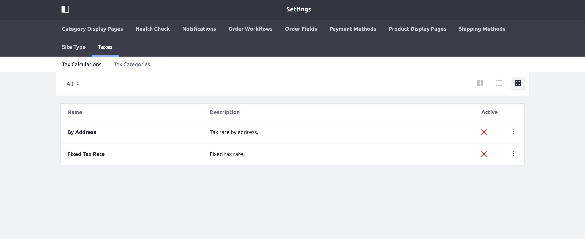
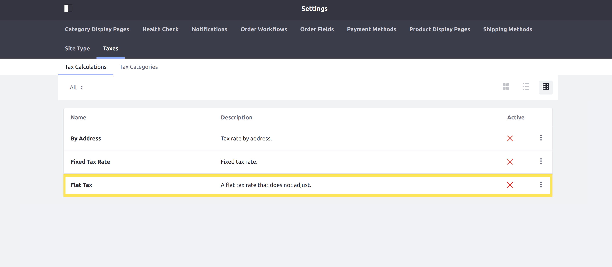

Implementing a New Tax Engine¶
This tutorial will show you how to add a new tax engine by implementing the CommerceTaxEngine interface.
A tax engine performs the calculation for taxes when a transaction is made. Liferay Commerce provides two default tax engines: FixedCommerceTaxEngine for fixed rates, and ByAddressCommerceTaxEngine for calculating taxes by address.

Deploy an Example¶
In this section, we will get an example tax engine up and running on your instance of Liferay Commerce. Follow these steps:
Start Liferay Commerce.
docker run -it -p 8080:8080 liferay/commerce:2.0.4Download and unzip Acme Commerce Tax Engine.
curl liferay-q4b9.zip
unzip liferay-q4b9.zip
Go to
liferay-q4b9.cd liferay-q4b9Build and deploy the example.
./gradlew deploy -Ddeploy.docker.container.id=$(docker ps -lq)
Note: This command is the same as copying the deployed jars to /opt/liferay/osgi/modules on the Docker container.
Confirm the deployment in the Docker container console.
STARTED com.acme.q4b9.impl_1.0.0
Verify that the example tax engine was added. Open your browser to
https://localhost:8080and navigate to Site Administration → Commerce → Settings → Taxes → Tax Calculations. The new tax engine (“Flat Tax”) will be present in the list shown.

Congratulations, you’ve successfully built and deployed a new tax engine that implements CommerceTaxEngine.
Next, let’s dive deeper to learn more.
Walk Through the Example¶
In this section, we will review the example we deployed. First, we will annotate the class for OSGi registration. Second, we will review the CommerceTaxEngine interface. And third, we will complete our implementation of CommerceTaxEngine.
Annotate the Class for OSGi Registration¶
@Component(
immediate = true,
property = "commerce.tax.engine.key=" + Q4B9CommerceTaxEngine.KEY,
service = CommerceTaxEngine.class
)
public class Q4B9CommerceTaxEngine implements CommerceTaxEngine {
public static final String KEY = "Example";
It is important to provide a distinct key for the tax engine so that Liferay Commerce can distinguish the new engine from others in the tax engine registry. Reusing a key that is already in use will override the existing associated tax engine.
Review the CommerceTaxEngine Interface¶
Implement the following methods:
public CommerceTaxValue getCommerceTaxValue(
CommerceTaxCalculateRequest commerceTaxCalculateRequest)
throws CommerceTaxEngineException;
This method will be where the business logic is implemented for our tax engine. See CommerceTaxValue for more information.
public String getDescription(Locale locale);
This returns a brief description of our tax engine. See the implementation in Q4B9CommerceTaxEngine.java for a reference in retrieving the description with a language key.
public String getName(Locale locale);
This returns the name of our tax engine. It works similarly to thegetDescriptionmethod.
Complete the Tax Engine¶
The tax engine is comprised of logic to perform the tax calculation. Do the following:
Add Business Logic to getCommerceTaxValue¶
@Override
public CommerceTaxValue getCommerceTaxValue(
CommerceTaxCalculateRequest commerceTaxCalculateRequest)
throws CommerceTaxEngineException {
BigDecimal flatTaxValue = new BigDecimal("1.50");
if (commerceTaxCalculateRequest.isPercentage()) {
flatTaxValue = flatTaxValue.divide(new BigDecimal(100.0));
flatTaxValue = flatTaxValue.multiply(
commerceTaxCalculateRequest.getPrice());
}
return new CommerceTaxValue("flat-tax", KEY, flatTaxValue);
}
TheCommerceTaxCalculateRequestparameter contains information needed for making our calculation. For this example, we use the price from theCommerceTaxCalculateRequest, as well as a value indicating whether to apply the rate as a percentage. See CommerceTaxCalculateRequest.java to find more methods you can use with aCommerceTaxCalculateRequest.
Add the Language Keys to Language.properties¶
Add the language keys and their values to a Language.properties file within our module:
a-flat-tax-rate-that-does-not-adjust=A flat tax rate that does not adjust.
flat-tax=Flat Tax
See Localizing Your Application for more information.
Conclusion¶
Congratulations! You now know the basics for implementing the CommerceTaxEngine interface, and have added a new tax engine to Liferay Commerce.